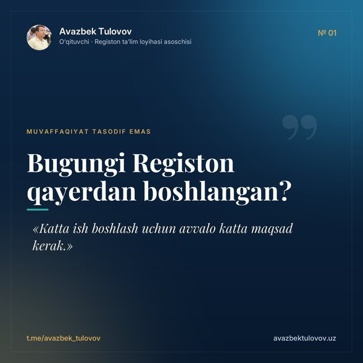
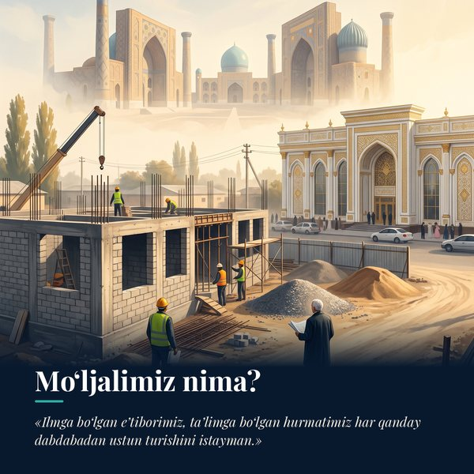

Учитель · Основатель образовательного проекта Registon
Avazbek
Tulovov
Registon начался в 2013 году с двух старых парт в съёмном доме. Сегодня это школы и учебные центры в Ташкенте и Бухаре и сотни тысяч учеников. Здесь я пишу об образовании, лидерстве, воспитании и о том, чему научился на этом пути.
- 2013
- год основания Registon
- 300 000+
- учеников прошли обучение
- 2023
- первая частная школа
Обо мне
От сельского мальчика до основателя Registon
Я вырос в обычном кишлаке Пахтачийского района Самаркандской области, в семье дехканина. Книжный шкаф в нашем доме и труды джадидов сформировали моё мировоззрение.
Окончил философский факультет Национального университета Узбекистана, затем магистратуру. С 2011 года готовил абитуриентов в Ташкенте. В 2013 году занятия с несколькими учениками в съёмном доме вместе с моим учеником переросли в образовательный проект «Registon».
Сегодня Registon — это частные школы в Ташкенте и Бухаре, учебные центры и проект «Turkiston», представленный в 2026 году. А я по-прежнему считаю себя прежде всего учителем.
Во что я верю
- РезультатНастоящая ценность образования — не в количестве уроков, а в изменениях, которые произошли в ученике.
- КомандаГлавное достижение сильного руководителя — объединить вокруг одной цели людей, которые сильнее его самого.
- ДовериеДоверие родителей завоёвывается не рекламой, а результатом и ответственностью.
- ЗнаниеЯ хочу, чтобы в страну, куда когда-то весь мир приезжал за знаниями, мир снова приезжал за знаниями.
Путь
От двух старых парт до школ
- 2013Начало
Ташкент, съёмный дом. Две старые парты с рынка Янгиобод. Объявления, расклеенные вручную по улицам, и первые ученики.
- 20151500 учеников
В филиале на Чиланзаре число учеников превысило 1500 — тогда в Ташкенте центров с более чем тысячей учеников были единицы.
- 2020Испытание
Карантин. Классы опустели, обязательства остались. Год, который показал: настоящая сила организации проявляется в кризис.
- 2023Первая школа
3 сентября. Здание, три месяца назад бывшее бетонным каркасом, открылось как первая частная школа Registon в Ташкенте.
- БухараШкола в городе знаний
Школа Registon открылась в городе, где жил Фитрат и чьи медресе прославились на весь мир.
- 2026«Turkiston»
Представлен новый образовательный проект, построенный на десятилетнем опыте Registon.
Статьи
Истории Registon и размышления

С чего начался сегодняшний Registon?
2013 год. Ташкент. В съёмном доме я готовил абитуриентов. Учеников становилось больше, места перестало хватать. Купить новые парты мы не могли. Вместе с моим учеником Алишером мы поехали на рынок…

«Через три месяца увидите!»
17 мая 2023 года. Я стою на шестом этаже первой школы Registon в Ташкенте. Вокруг бетонные колонны, стройматериалы. Жара. Здание пока мало чем напоминает школу. Но в сентябре мы планируем принять…

На что мы ориентируемся?
2023 год, май. Строительство школы Registon продолжалось. Выглянув в окно, я видел напротив один из самых известных и роскошных банкетных залов города — «Версаль». Когда кто-то спрашивал адрес, мы по…
Каждый день — одна история
Новые статьи сначала выходят в Telegram-канале
Короткие, искренние и основанные на опыте мысли об образовании, лидерстве и воспитании.
Контакты
Связаться
По вопросам сотрудничества, предложениям и вопросам пишите в Telegram.